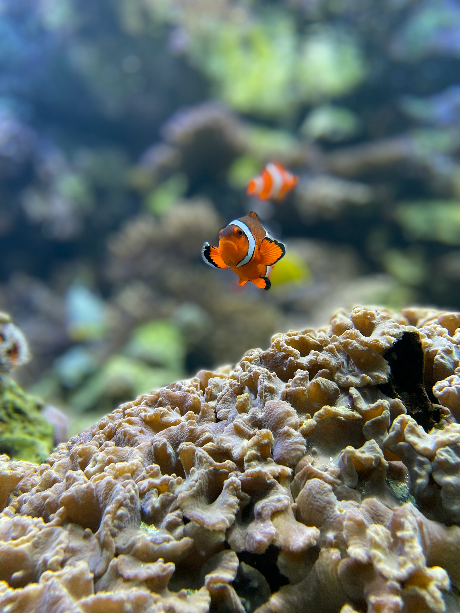

Galería de Imágenes



Calendario Semanal
Lunes
Martes
Miércoles
Jueves
Viernes
Sábado
Domingo
Composición Libre
Los peces globo pueden inflarse y doblar varias veces su tamaño para evitar depredadores
Algunos peces como el pez arquero disparan chorros de agua para cazar insectos fuera del agua
Los peces linterna tienen la capacidad de producir luz bioluminiscente para camuflarse en el océano profundo
Existen más de 33,000 especies de peces con gran diversidad de tamaños, colores y formas en el mundo
Videos
Datos curiosos del oceano